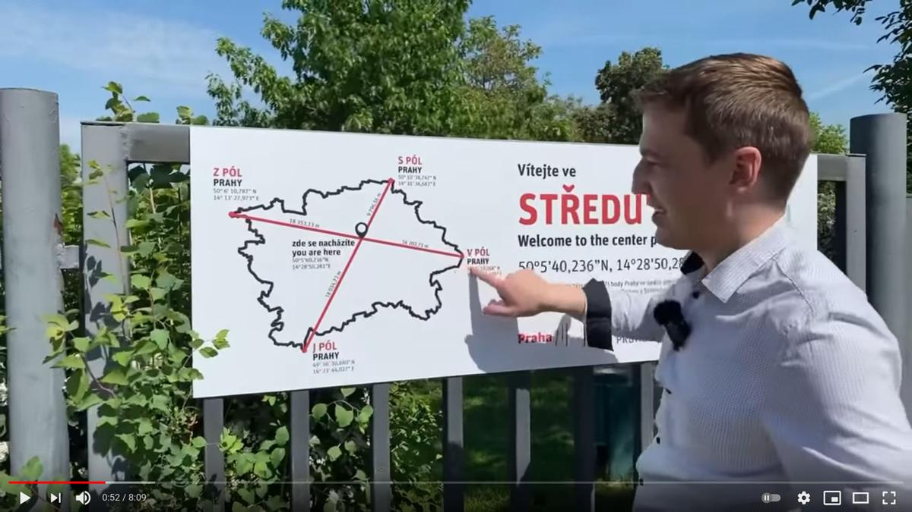
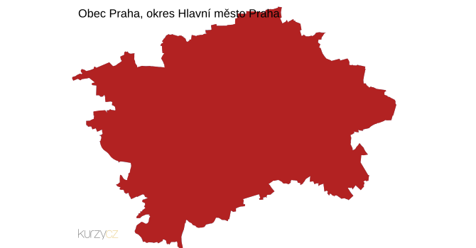
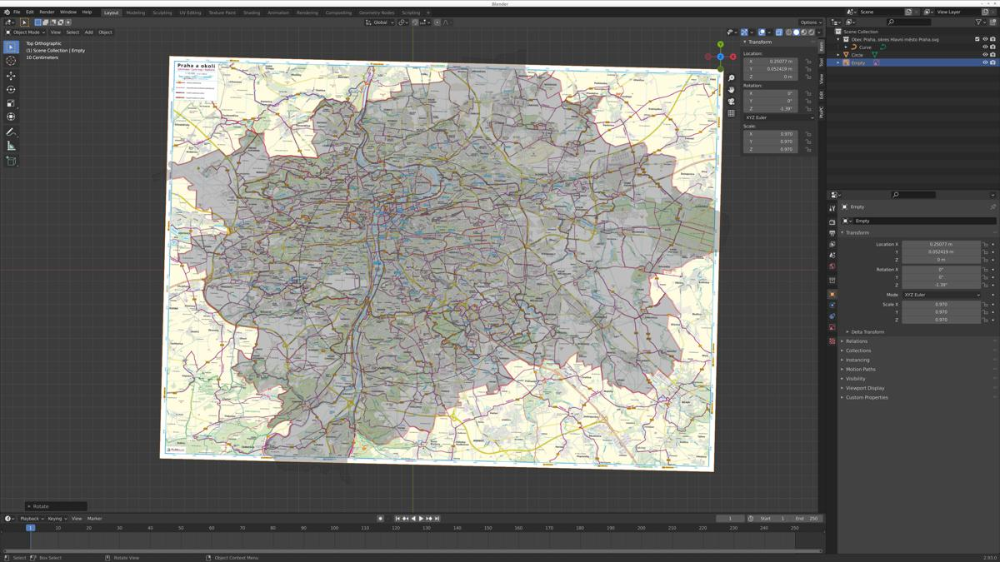
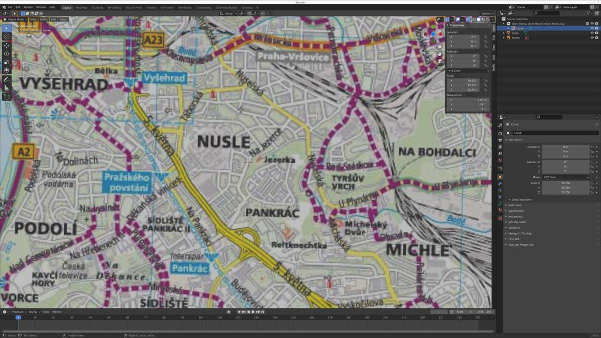
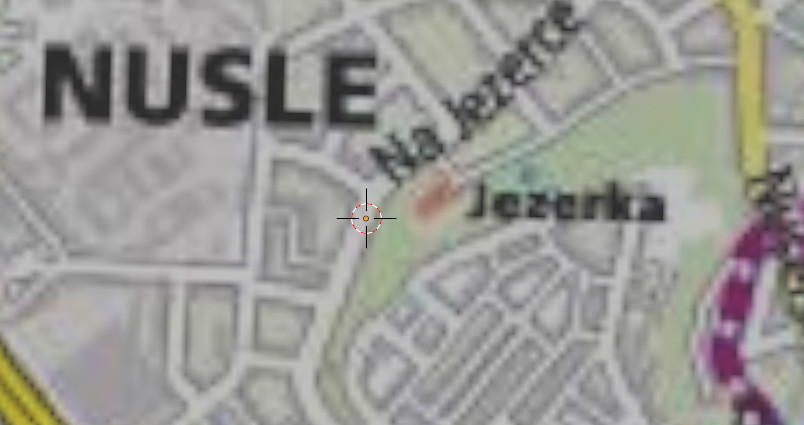
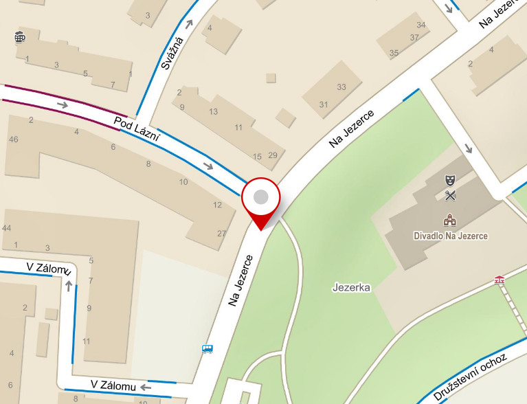
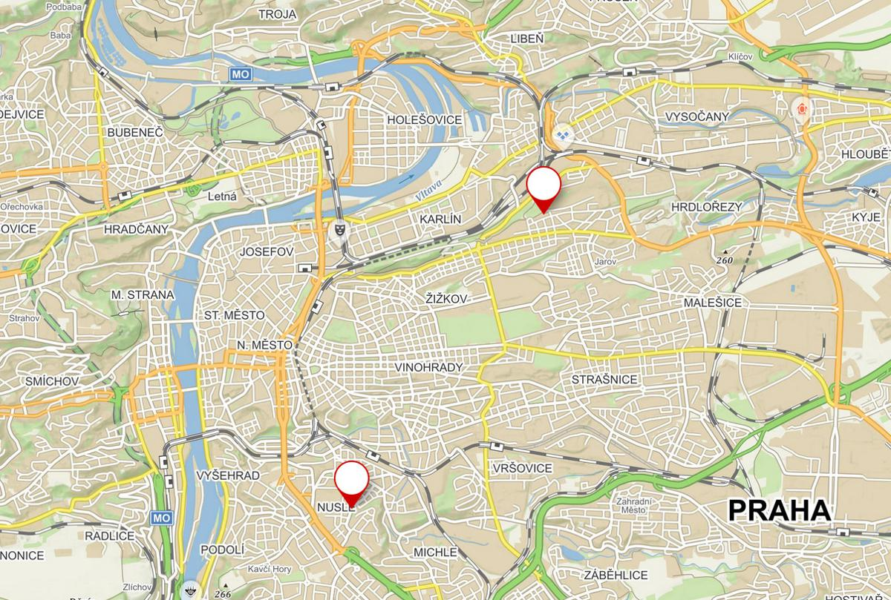

Geometrický střed Prahy
Kluci z Prahy (známí taky jako Honest guide), publikovali nové video ohledně přesného středu Prahy. Když jsem to tak sledoval, těšil jsem se na popis hledání centroidu nekonvexního polygonu.
Přišlo mi docela smutné, že se o to ani nesnažili. Jednoduše vzali bod nejvíc na západě, východě, jihu a severu Prahy a nakreslili mezi nimi čáry. Tam kde se protnuly pak vybrali střed. Jak se dá najít pravý střed?

Poznámka: geometrický střed je místo, kde kdybyste mapu vystřihli z papíru, můžete papírový obrys položit na hrot špendlíku a mapa bude vyvážená a nebude padat mimo.
Sežeň polygonovou mapu prahy
Což může být poměrně náročné. Naštěstí se dá prostě vygooglit použitelný SVG. Jeden jsem našel tady:

Otevřel jsem ho v textovém editoru a smazal všechno, kromě samotného polygonu:
Blender magie
Výsledné SVG potom může být importované do Blenderu:
A naškálované na větší velikost:
Uprostřed obrazovky je možné vidět „origin point“, který se nachází ve středu 3D kurzoru. Ta malá žlutá tečka. Blender má docela užitečnou funkci, kde vám umožňuje rychle přemístit „origin point“ do středu geometrie. Ve 3D modelování se to používá docela často, protože typicky chcete dělat nějaký druh modifikace (rotaci třeba) závislý na geometrickém těžišti objektu.
Potom už zbývá jen přemístit objekt (polygonovou mapu) na místo kurzoru a otočit jí o 180°, protože je z nějakého důvodu importovaná vzhůru nohama.
Teď by bylo hezké to nějak zvizualizovat na reálné mapě, abysme zjistili kde přesně ten bod je. Použil jsem mapu z oficiálních stránek Města Prahy. Pak jsem obrázek mapy orotoval o pár stupňů a škáloval ho, dokud polygonová mapa nepasovala na obrys v obrázkové mapě.
Rotace je třeba, protože data v SVG obrázku, který jsem použil, jsou z nějakého důvodu pootočena o pár stupňů a pak zkorigována SVG transformací. Eh.

Když se to pak zazoomuje, můžete vidět střed polygonu nad skutečnou mapou:

Výsledek

Což je podle mého odhadu tady: 50.0579333N, 14.4434400E.

Docela rozdílný bod, že? Pobavilo mě, že se nachází tak hezky uprostřed ulice.

Nalevo je bod který jsem našel, napravo bod od Kluků z Prahy.
Definice středu
Asi je úplně jedno, kde člověk bere střed Prahy. Ať tak nebo tak, tak stejně to bude záležet na tom jak kdo interpretuje pojem střed. Pro někoho je to tam kde se střetávají severo-jižní a východo-západní přímky. Pro někoho je to geometrický střed. A pocitově, kdybych měl vybrat kde se má střed nacházet, tak bych asi zvolil zase trochu jiný bod, někde psychologicky víc uprostřed.
Co mě ovšem baví je mít jednoduchou možnost si takhle hrát a zkoumat, k tomu je Blender super.
Zdrojové materiály
Blender soubor:
Pokud chcete dostat z SVG mapy set bodů, které definují polygon, následující script k tomu lze použít, za předpokladu že máte křivku mapy vybranou:
import bpy
obdata = bpy.context.object.data
curve = bpy.context.object
deg = bpy.context.evaluated_depsgraph_get()
me = bpy.data.meshes.new_from_object(curve.evaluated_get(deg), depsgraph=deg)
map_mesh = bpy.data.objects.new(curve.name + "_mesh", me)
print(dir(map_mesh.data))
for v in map_mesh.data.vertices:
print('{:.2f} {:.2f}'.format(v.index, v.co.x * 10000 + 700, v.co.y * 10000 + 500))

{kind=link}
{kind=link}
{kind=link}
{kind=link}
{kind=link}
{kind=link}
{kind=link}
{kind=link}
{kind=link}
{kind=link}
{kind=link}
{kind=link}
{kind=link}
{kind=link}
{kind=link}